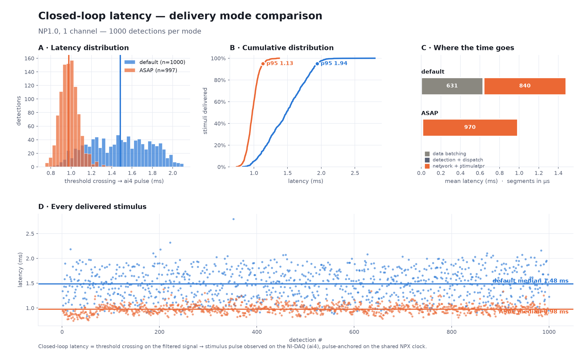
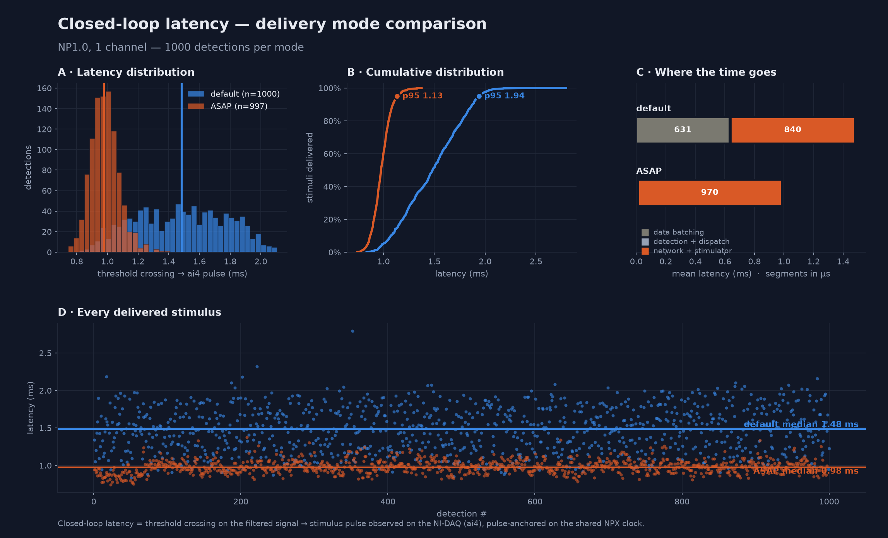
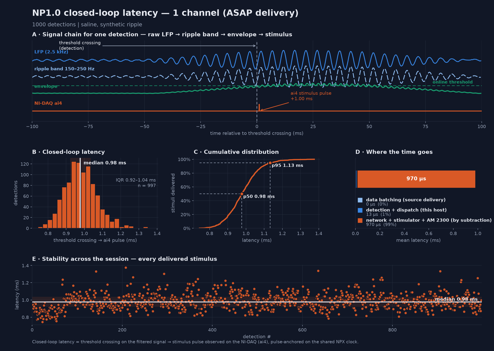

Closed-loop latency — measured results#
Closed-loop latency is defined as the time from the detection threshold being crossed on the filtered probe signal to the stimulus pulse appearing on the NI-DAQ (ai4). It is measured offline from the recording, pulse-anchored on the shared Neuropixels clock, so every value is ≥ 0 by construction and corresponds to a physically delivered pulse.
Rig: Neuropixels probe → SpikesPeak (Qt/C++) → UDP → Raspberry Pi 3B+ → AM Systems 2300 → electrode, with the stimulus captured on NI-DAQ PXI-6133 ai4 at 40 kHz (25 µs edge resolution). Synthetic ripple played into saline. Every test below delivered one biphasic pulse per detection (60 µs phase, 10 µs interphase gap).
Headline#
Sub-millisecond closed-loop latency on real hardware, at every quorum level: median 0.94 – 0.98 ms (Neuropixels 1.0, ASAP data delivery, ~1000 delivered stimuli per condition).
| configuration | median | IQR | p95 | n |
|---|---|---|---|---|
| NP1.0 — ASAP delivery | 0.942 – 0.977 ms | 0.895 – 1.036 | 1.08 – 1.13 ms | 995 – 997 |
| NP1.0 — default delivery | 1.483 – 1.489 ms | 1.233 – 1.744 | 1.94 – 1.99 ms | 998 – 1000 |
| NP2.0 — default delivery | 1.173 – 1.179 ms | 0.945 – 1.366 | 1.55 – 1.61 ms | 99 per test |
All tests: 0 unmatched — every stimulus pairs with a preceding detection.
The full NP1.0 matrix — 1000 detections per cell#
Every quorum level measured in both delivery modes at ~1000 delivered stimuli, all with per-stage
instrumentation. Paired runs on the same rig and settings, differing only in the source's
low_latency flag.
| detector | default | ASAP | change |
|---|---|---|---|
| 1 ch | 1.483 ms | 0.977 ms | −506 µs (−34.1 %) |
| 2 ch, quorum 2 | 1.489 ms | 0.942 ms | −547 µs (−36.7 %) |
| 4 ch, quorum 3-of-4 | 1.484 ms | 0.963 ms | −521 µs (−35.1 %) |
Latency is independent of quorum size in both modes — flat within 6 µs across quorum with default delivery and within 35 µs with ASAP. Quorum decides which threshold crossing triggers the stimulus, not how long the path from that crossing to the electrode takes.
Single channel#


Quorum 2 — 2 channels#


Quorum 3-of-4 — 4 channels#


Spread, not just centre#
The variance reduction is as valuable as the median shift. ASAP tightens the interquartile range by 4–5× in every configuration:
| detector | IQR (default) | IQR (ASAP) | tightening | p95 (default → ASAP) |
|---|---|---|---|---|
| 1 ch | 482 µs | 114 µs | 4.2× | 1.938 → 1.133 ms |
| 2 ch, quorum 2 | 500 µs | 99 µs | 5.1× | 1.959 → 1.082 ms |
| 4 ch, quorum 3-of-4 | 503 µs | 116 µs | 4.3× | 1.989 → 1.116 ms |
The loop is not merely faster on average but far more predictable, which is what matters when a stimulus must land in a specific phase of an event.
Why it works#
Data sources normally hand consumers a block of samples at once. Every sample in that block becomes visible at the same instant, so the oldest one is already stale before the detector can look at it. At the NP1.0 LFP rate (2.5 kHz) each extra sample in a block is another 400 µs of staleness.
low_latency: true on the probe source polls on every event-loop pass instead of every 1 ms, so blocks
are as small as the clock allows. Measured on the live stage counters (means, in µs):
| stage | default | ASAP |
|---|---|---|
| data batching (source delivery staleness) | 214 – 631 µs | 0 µs — exactly 0 in every one of ~1000 events |
| detection + dispatch (filters, state machine, UDP send) | 8 – 10 µs | 13 – 15 µs |
The detector's own compute is 8–15 µs — two orders of magnitude below the loop total. There is nothing to gain by optimising the signal processing; the latency lives in data delivery and in the network/stimulator path.
Cost: ASAP polling raises CPU use on the acquisition thread. It is opt-in per source, so only configs that actually close a loop pay for it.
Per-test results#
Neuropixels 1.0#


| test | detector | delivery | median | IQR | p95 | n / unmatched |
|---|---|---|---|---|---|---|
np1_2ch_q2_asap |
2 ch, quorum 2 | ASAP | 0.942 ms | 0.895 – 0.994 | 1.082 | 996 / 0 |
np1_4ch_q3_asap |
4 ch, quorum 3-of-4 | ASAP | 0.963 ms | 0.908 – 1.024 | 1.116 | 995 / 0 |
np1_lat1k_asap |
1 ch | ASAP | 0.977 ms | 0.922 – 1.036 | 1.133 | 997 / 0 |
np1_latency_1ch |
1 ch | default | 1.425 ms | 1.210 – 1.685 | 1.908 | 100 / 0 |
np1_lat1k_baseline |
1 ch | default | 1.483 ms | 1.234 – 1.716 | 1.938 | 1000 / 0 |
np1_4ch_q3_baseline |
4 ch, quorum 3-of-4 | default | 1.484 ms | 1.241 – 1.744 | 1.989 | 998 / 0 |
np1_2ch_q2_baseline |
2 ch, quorum 2 | default | 1.489 ms | 1.233 – 1.733 | 1.959 | 999 / 0 |
np1_latency_1ch is the original 100-detection pilot, superseded by np1_lat1k_baseline; it is kept
because it independently reproduces the default-mode result at a tenth the sample size.
Per-run figures, light and dark: latency/np1_2ch_baseline_figure*.png,
np1_2ch_asap_figure*.png, np1_4ch_baseline_figure*.png, np1_4ch_asap_figure*.png,
np1_baseline_figure*.png, np1_asap_figure*.png.
Neuropixels 2.0#
| test | detector | median | mean | n / unmatched |
|---|---|---|---|---|
np2_2channel_2required |
2 ch, quorum 2 | 1.179 ms | 1.165 | 99 / 0 |
np2_4channel_3required |
4 ch, quorum 3-of-4 | 1.173 ms | 1.179 | 99 / 0 |
Flat across quorum. NP2.0 runs ~0.3 ms faster than NP1.0 by default, consistent with its different
data path: NP2 derives data.lfp from the 30 kHz raw stream and decimates, so its pre-decimation
delivery granularity is finer than NP1's native 2.5 kHz LFP band — less staleness before the detector
sees a sample. These runs predate the per-stage instrumentation, so no stage split is available for
them. ASAP delivery has not yet been measured on NP2.0.
How to reproduce#
# record (real hardware; --source "NPX 1.0 with NI-DAQ (ASAP)" for low-latency delivery)
python ripple_tools/run_latency_hw.py --dir <abs recdir> --name <name> \
--nchan 2 --quorum 2 --n 1000
# authoritative analysis: threshold crossing -> ai4 pulse
python ripple_tools/analyze_recording.py <recdir> --ws <recdir>/<name>_ws.jsonl --figs <recdir>/analysis
# figures (both themes)
python ripple_tools/plot_latency_figure.py <recdir> --ws <ws> --theme light --out fig.png
python ripple_tools/plot_latency_figure.py <recdir> --ws <ws> --theme dark --out fig_dark.png
# A/B two conditions
python ripple_tools/plot_latency_compare.py --a <dirA> --a-ws <wsA> --b <dirB> --b-ws <wsB> --out cmp.png
Method and per-stage instrumentation: LatencyProfiling.md.
Offline pipeline and the sync fit: RippleClosedLoopAnalysis.md.
Measurement notes#
- The start point is the online detector's own firing instant — the sample that completed the quorum and whose envelope crossed threshold, stamped in the detector at that moment and mapped onto the recording clock. It is not an offline re-simulation, so it carries no reconstruction jitter.
- The end point is the ai4 rising edge, warped onto the Neuropixels clock via a shared ~1 Hz sync train. Sync quality is reported per test (≈10 ppm drift, ≈0.012 ms residual throughout).
- Pairing is pulse-anchored: each pulse is matched to the detection that preceded it, so a value can never be negative and every reported latency corresponds to a real delivered stimulus.
- Electrodes are auto-picked per run (strongest ripple), so paired conditions are not electrode-matched: 1 ch used e320 (default) / e80 (ASAP); 2 ch used e80,160 / e32,64; 4 ch used e32,64,80,160 / e64,128,144,160. The ASAP effect reproduces across all of them, and the flat totals across quorum show the electrode choice does not move the delivery path.
- The stage decomposition uses means, not medians. The batching counter is quantised to one input
sample (400 µs at 2.5 kHz), so its median snaps to 0 / 400 / 800 µs; medians are also not additive, so
subtracting them from a median total pushes the discretisation error into the residual. Means are
additive and reconcile. The
network + stimulatorsegment is obtained by subtraction, not measured directly. - Open item. The measured batching term falls monotonically with channel count in default mode (631 / 381 / 214 µs for 1 / 2 / 4 channels) while the total stays flat at 1.483 – 1.489 ms, so the subtracted residual rises to compensate. The totals are NI-DAQ-anchored and trustworthy; this channel-count dependence of the attribution is not yet explained and the stage split should be read as indicative rather than exact.
Corrections applied to this page#
Two offline analysis bugs were found and fixed; every number here comes from the corrected pipeline.
- Clock-scale error (fixed 2026-07-21). The offline mapping mixed the nominal 100 kHz tick constant with the measured ticks-per-sample, leaving a ~10 ppm scale error that made apparent latency ramp with recording length (+6.5 ms over a 618 s run). It invalidated all latency values published before that date.
- Sync off-by-one wrap (fixed 2026-07-21). When the NI-DAQ drops a sync pulse at the start of the
train, both the start- and end-anchored pairings are wrong by a whole period, so the pairing chose an
offset ~1.000 s off and added exactly one sync period to every latency in that recording. It is
invisible in the usual diagnostics — pulse intervals, drift (9.8 ppm) and residual (0.012 ms) all look
perfect either way. It hit one recording (
np1_4ch_q3_asap, 257 of 995 pulses left unpaired) and is now detected and corrected automatically, with a warning. Seesync.py_pair_edges_auto.